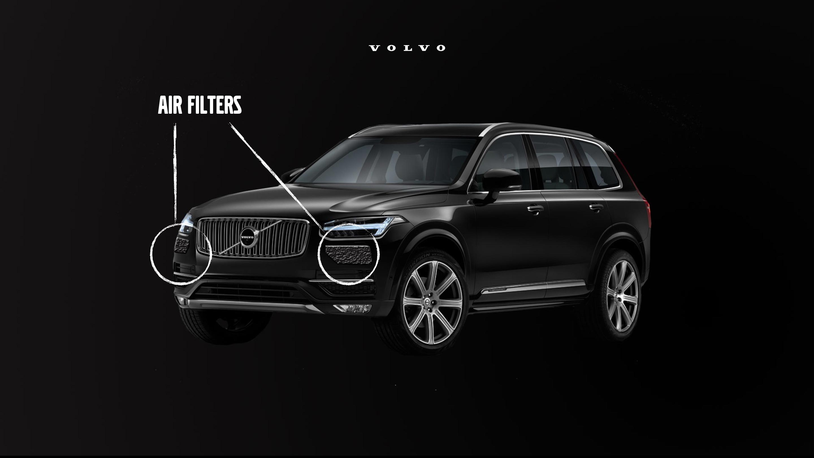
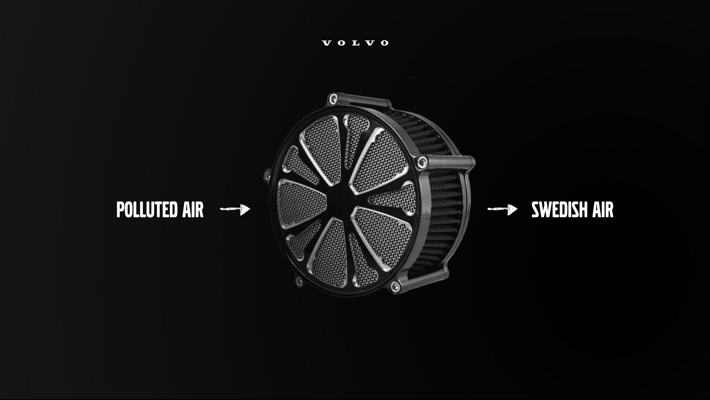

Our concept is a specialized air filter that is built into the outer body of the vehicle. As you drive it pulls in the polluted air, filters it and releases purified air into the environment. Each time you drive your car, you are helping to make the air cleaner and healthier to breathe.
A car filter that purifies polluted air in the atmosphere.

Volvo wanted us to explore innovations that can deliver at the future intersection of mobility and luxury services, ideas that can help bring Volvos expression “Human-centric innovation Made by Sweden” to life.
For the automotive industry to be progressive, it needs to gain a new perspective on their industry, where they prioritize the environment and help towards a positive development. But not only through producing cars that use leave a smaller ecological footprint, but through cleaning up after themselves and others.
We asked ourselves: What is a basic human need? What can we absolutly not live without? And how can Volvo help to be the leading force in supporting this, while also adding value to Volvo’s brand. Our solution: Air by Sweden.


The air filter will be able to collect data that will provide information on what areas are most polluted, what pollutants are in the air, and how much pollutants they have cleaned, and how much purified air they have released into the environment. The filter will be produced by Volvo and become standard in their vehicles, as well as marketed to other automotive companies, for use in all vehicles.
Client
Volvo.
My Roles
Concept development and film.
Team members
Ellinor Ekström, André Sebastié, Michelle Tucker, Satasha Wong and me.